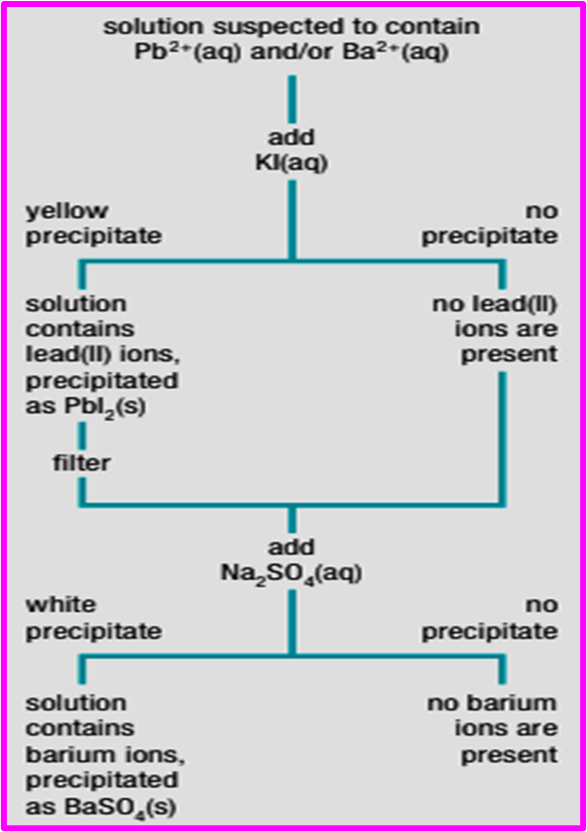

Callout
Chemists have developed a series of qualitative tests to identify other cations as well, based on the precipitation of compounds with low solubility. These tests often must be conducted in a specific order to successfully identify the ions present.
Suppose that you are given an unknown solution and suspect that it may contain the cations Pb2+(aq), Ba2+(aq), or both. What chemical tests could you perform to identify each ion in the solution?
The qualitative analysis of this unknown solution involves two tests. To correctly identify the ions present, the tests have to be performed in a specific sequence. They could not be done in reverse order since both lead and barium ions precipitate with sulfate.

Select each tab to learn more.
Follow these tips for conducting a qualitative analysis of cations in an unknown solution. These tips also apply to conducting a qualitative analysis of anions.
Simply switch “cation” for “anion” (and vice versa) in each tip.
1. Use a solubility table to identify an anion that may be used to precipitate each of the cations in the solution.
2. Determine the order in which the precipitation reactions must occur, and select an appropriate solution for each test.
3. Construct a flow chart like the one in Figure 4 to illustrate the test sequence.
Construct a flow chart for the qualitative analysis of a solution that may contain silver ions, Ag+(aq), and/or zinc ions, Zn2+(aq).
Step 1. Use a solubility table to identify an anion that may be used to precipitate each of the cations in the solution.
Step 2. Determine the order in which the precipitation reactions must occur, and select an appropriate solution for each test.
Step 3. Construct a flowchart to illustrate the test sequence.
Construct a flow chart for the qualitative analysis of a solution that may contain silver ions, Ag+(aq), and/or zinc ions, Zn2+(aq).
The flowchart must be similar to this:
Flame Test - a diagnostic test used to identify a specific element.
Identify the element for each color of flame.